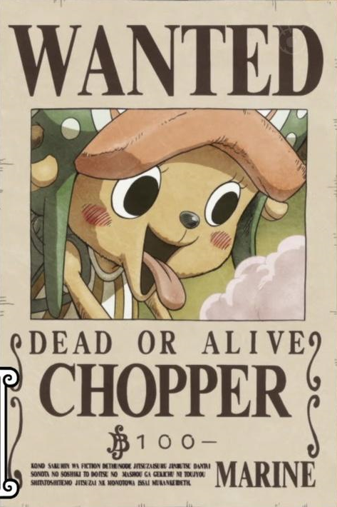

Monkey D. Luffy
Captain
Devil Fruit User
Gomu Gomu no Mi
Gear Second
Gear Third
Gear Fourth
Haki
- Kenbunshoku Haki
- Busoshoku Haki
- Haoshoku Haki
Monkey D. Luffy, also known as " Straw Hat Luffy" and commonly as "Straw Hat", is the main protagonist
of the manga and anime, One Piece. He is the founder and captain of the increasingly infamous and powerful
Straw Hat Pirates, as well as one of its top fighters. His dream is to become the King of the Pirates. He
believes that being the Pirate King means having the most freedom in the world.
Roronoa Zoro
Swordsman
Three-Sword Style
Wado Ichimonji
Sandai Kitetsu
Enma
Haki
- Kenbunshoku Haki
- Busoshoku Haki
- Haoshoku Haki
Roronoa Zoro, also known as "Pirate Hunter" Zoro, is the First Mate of the Straw hat crew. Formerly a bounty hunter,
he is the second member of the crew and the first to join, doing so in the Romance Dawn Arc.As a master of Santoryu,
a swordsmanship style which he created during his childhood training in Shimotsuki Village, Zoro is among the four
most powerful combatants of the Straw Hats, alongside Luffy, Sanji and Jinbe. His dream is to become the
greatest swordsman in the world, in order to honor a promise he made to his deceased childhood friend Kuina.
Nami
Navigator
Cartographer
Thief and Pickpcket
Art of Weather
Clima-Tact
"Cat Burglar" Nami is the navigator of the Straw Hat Pirates. Not only is she extremy skilled in navigation and cartographey, she is also
an excellent thief and a master pickpockeyt. She is the third member of the crew and the second to join, doing so during the Orange Town Arc.
She is the adoptive sister of Nojiko after the two were orphaned and taken in by Bell-mère. She was formerly a member of the Arlong Pirates and initially
joined the Straw Hats so that she could rob them in order to buy back her village from Arlong. However, she legitimately joined the Straw Hats after they
rebelled against and defeated Arlong. Her dream is to make a map of the entire world.
"God" Usopp
Sniper
Ginga Pachinko
Kuro Kabuto
Pop Greens
Dials User
Haki
"God" Usopp is the sniper of the Straw Hat Pirates. He is the fourth member of the crew and the third to join, doing so at the end of the Syrup Village Arc.
Although he left the crew during the Water 7 Arc, he rejoined at the end of the Post-Enies Lobby Arc. Usopp is the son of Yasopp and Banchina. He was born
and raised in Syrup Village, serving as "captain" of the Usopp Pirates and being Kaya's close friend. After working with the Straw Hats to defeat Kuro and
the Black Cat Pirates, he was invited to join the crew.Despite his normal cowardice, Usopp dreams of becoming a brave warrior of the sea just like his father
and lives every day in pursuit of living up to this dream.
Vinsmoke Sanji
Cook
Culinary Expert
Black Leg Style
Diable Jambe
Raid Suit
Attack Cuisine
Hormone Soup with Sea Pork
Simsim Cream
Haki
- Kenbunshoku Haki
- Busoshoku Haki
"Black Leg" Sanji, born as Vinsmoke Sanji, is the cook of the Straw Hat Pirates. He is the fifth member of the crew and the fourth to join, doing so at the end
of the Baratie Arc. Born as the third son and fourth child of the Vinsmoke Family (thus making him a prince of the Germa Kingdom), he disowned his family twice,
once in his youth and again after reuniting with them as an adult. After fleeing the Vinsmokes as a child, he eventually entered the care of Zeff as the sous
chef of the Baratie, where he would remain until he met Luffy, who convinced him to join his crew. His dream is to find the rumored chef's paradise, All Blue,
which is where East Blue, West Blue, North Blue, and South Blue meet, along with their wildlife.

Tony Tony Chopper
Doctor
Devil Fruit User
Hito Hito no Mi
Gaurd Point
Horn Point
Arm Point
Jumping Point
Monster Point
Kung Fu Point
Zoolingualism
Tony Tony Chopper, also known as "Cotton Candy Lover" Chopper, is the doctor of the Straw Hat Pirates. He is the sixth member of the crew and the fifth
to join, doing so at the end of the Drum Island Arc. He was temporarily forced to join the Foxy Pirates during the Long Ring Long Land Arc, but was quickly
returned to Luffy's crew. Chopper is a reindeer that ate the Hito Hito no Mi, a Devil Fruit that allows its user to transform into a human hybrid or a human
at will. He came from Drum Island and was taught how to be a doctor by his two parental figures, Doctors Hiriluk and Kureha. His dream is to one day become a
doctor capable of curing any disease and wants to travel all across the world specifically in the hopes of accomplishing this dream.
Nico Robin
Archaeologist
Devil Fruit User
Hana Hana no Mi
Fish-Man karate
Espionage
Spy
Nico Robin, also known by her epithet "Devil Child", is the archaeologist of the Straw Hat Pirates. She is the seventh member of the crew and the sixth
to join, doing so at the end of the Arabasta Arc. She temporarily left the crew during the Water 7 Arc, but rejoined during the Enies Lobby Arc.Robin ate
the Hana Hana no Mi at a young age, giving her the power to reproduce her body parts (or her entire body) on any surface at will. As the sole survivor of Ohara,
she is currently the only person in the world known to have the ability to read and decipher Poneglyphs, a skill which is considered forbidden and threatening
to the World Government. Her dream is to find the Rio Poneglyph which tells the true history of the world, specifically the Void Century.
Franky
Shipwright
Cyborg
BF-36/Cyborg Tactics
BF-37/Armored Me
BF-38/General Franky
Master Craftsman
Engineering Genius
Born "Cutty Flam", he chose to go by his nickname of "Franky" until eventually permanently discarding his true name per the request of Iceburg
to hide his identity. Originally from the South Blue, Franky was abandoned by his family as a four-year-old, eventually making his way to Water 7.
There, he came to be a member of Tom's Workers, until an incident resulted in his body being heavily damaged and requiring him to augment himself
into a cyborg. Upon returning to Water 7, he became the leader of the Franky Family, a group of ship dismantlers. Franky and his followers were
originally enemies of the Straw Hats at the beginning of the Water 7 Arc, until circumstances forced them to become allies at the end of the same
arc and the Enies Lobby Arc. Franky's dream is to create a ship and circumnavigate the world with it, and he built the Thousand Sunny and joined
the Straw Hat Pirates to fulfill his dream.
Brook
Musician
Swordsman
Shikomizue
Devil Fruit User
Yomi Yomi no Mi
Soul
"Soul King" Brook is the musician of the Straw Hat Pirates, and one of their two swordsmen. He is the ninth member of the crew and the eighth
to join, doing so at the end of the Thriller Bark Arc. Brook ate the Yomi Yomi no Mi, which allowed him to return to life after death once.
Brook eventually learned to tap deeper into the powers of his Devil Fruit, giving him significant control over his own soul and the souls of
others. His dream is to reunite with his old friend, Laboon, at Reverse Mountain, where he resides with Crocus. Originally a member of the Rumbar
Pirates, he died and was resurrected through the power of the Yomi Yomi no Mi. However, due to the amount of time it took for his soul to find his
body, it was reduced to a skeleton, keeping only his afro intact. Brook drifted alone in the Florian Triangle for 50 years, eventually meeting
Luffy and serving as the Straw Hats' ally during the Thriller Bark Arc before officially joining the crew.
Jinbe
Helmsman
Fish-Man Karate
Haki
- Kenbunshoku Haki
- Busoshoku Haki
Fish Communication
"Knight of the Sea" Jinbe is the helmsman of the Straw Hat Pirates. He is the tenth member of the crew and the ninth to join, doing so during
the Wano Country Arc. Jinbe is a whale shark fish-man and a powerful master of Fish-Man Karate. His dream is to fulfill his former captain
Fisher Tiger's dying wish of coexistence and equality between humans and fish-men. He was a member of the Sun Pirates, eventually becoming
its second captain after the death of their original captain, Tiger. He eventually became one of the Seven Warlords of the Sea, though he
resigned during the Summit War of Marineford. Prior to and amidst said war, Jinbe befriended Monkey D. Luffy, and two years later allied
with him and his crew to prevent the New Fish-Man Pirates' coup d'état against the Ryugu Kingdom's Neptune Royal Family. Luffy thereafter
invited him to join the Straw Hat Pirates, but Jinbe held it off until severing ties with Big Mom during the Whole Cake Island Arc. After
staying behind in Totto Land to protect the Sun Pirates from Big Mom's wrath, Jinbe returned to the Straw Hats during the Wano Country Arc,
officially announcing his status as a member of the crew.
Thousand Sunny
Ship
Soldier Dock System
Channel Zero
Channel One
Channel Two
Channel Three
Channel Four
Channel Five
Channel Six
Coup de Burst
Gaon Cannon
Library
Training Room
Aquarium
The Thousand Sunny is the second ship of the Straw Hat Pirates, built after the Going Merry was destroyed.
It is often referred to as Sunny (サニー Sanī?) by the crew. It is a brigantine-type ship designed and built
by Franky with help from Yokozuna, Iceburg, and the remaining Galley-La foremen who were among the best shipwrights
in the world. Built from Adam Wood, it is a magnificent ship of the finest craftsmanship at least double the size of
the Going Merry. Its features include practically all of the various requests the Straw Hats had before arriving in Water 7.